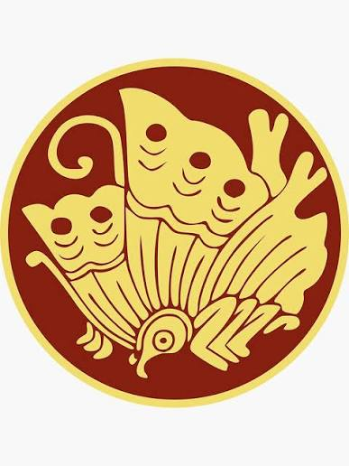
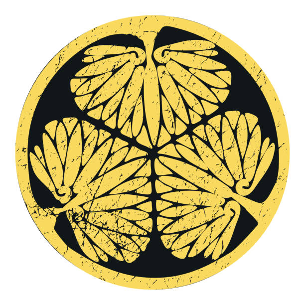

Os grandes clãs samurai desempenharam um papel fundamental na história do Japão, disputando poder, territórios e influência durante séculos.
O Clã Minamoto foi uma das famílias mais influentes da história do Japão. Descendentes da família imperial, os Minamoto ganharam poder durante o Período Heian e tornaram-se rivais do Clã Taira.
A sua maior vitória ocorreu na Guerra Genpei (1180–1185), quando derrotaram os Taira. Após o conflito, Minamoto no Yoritomo fundou o Xogunato de Kamakura, tornando-se o primeiro xogum do Japão.
O Clã Oda desempenhou um papel decisivo na unificação do Japão durante o Período Sengoku.
O seu líder mais famoso foi Oda Nobunaga, um comandante inovador que utilizou armas de fogo de forma eficaz e derrotou numerosos rivais. Embora tenha sido assassinado em 1582 no Incidente de Honnō-ji, as suas campanhas abriram caminho para a unificação do Japão.

O Clã Taira foi uma das famílias mais poderosas do final do Período Heian. Durante décadas controlou grande parte da corte imperial e exerceu enorme influência política.
Sob a liderança de Taira no Kiyomori, o clã atingiu o auge do seu poder. Contudo, a rivalidade com os Minamoto culminou na Guerra Genpei, terminando com a derrota dos Taira na Batalha de Dan-no-Ura em 1185.
O Clã Takeda ficou famoso pelas suas capacidades militares e pela sua poderosa cavalaria. Governava a Província de Kai durante o Período Sengoku.
O seu líder mais célebre foi Takeda Shingen, considerado um dos maiores estrategas militares japoneses. As suas batalhas contra Uesugi Kenshin tornaram-se lendárias.
O lema associado ao clã era: Rápido como o vento, silencioso como a floresta, feroz como o fogo e firme como a montanha.

O Clã Tokugawa completou a unificação do Japão após séculos de guerra civil. Após vencer a Batalha de Sekigahara em 1600, Tokugawa Ieyasu tornou-se xogum e fundou o Xogunato Tokugawa em 1603.
O governo Tokugawa manteve a paz durante mais de 250 anos, período conhecido como Era Edo. Durante este tempo, os samurai passaram gradualmente de guerreiros para administradores e funcionários.
O Clã Date governou extensos territórios no norte do Japão. O seu membro mais famoso foi Date Masamune. Conhecido como o "Dragão de Um Olho", Masamune perdeu um olho durante a infância, mas tornou-se um dos daimyō mais respeitados do Japão.
Era conhecido pela sua ambição, inteligência política e apoio ao comércio e às relações internacionais.